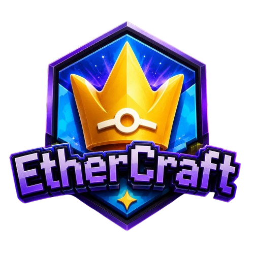

Economia Propria
Sistema economico pensado para trocas, lojas, recompensas e evolucao constante dentro do servidor.

Servidor Minecraft Survival RPG
Uma jornada survival com economia viva, progressao RPG, jobs, pets e eventos sazonais para jogadores Java e Bedrock.
O que torna o servidor especial
Sistema economico pensado para trocas, lojas, recompensas e evolucao constante dentro do servidor.
Escolha atividades, evolua sua funcao e desbloqueie recompensas conforme participa da comunidade.
Avance sua aventura com pets e recursos que tornam a experiencia mais viva e personalizada.
Participe de eventos especiais, desafios tematicos e recompensas limitadas durante o ano.
Entrada rapida
IP: jogar.ethercraft.com
Versao: 1.21+